MERIDIUS / ORC BRUTE / 3D RIG / 26 OCT 2026
Orc Brute 3D rig
The orc brute from your pixel-art concept, without the white body paint and with brown legs. He was built in Tripo, with his spiked club and his knife as separate models, and rigged in Blender on a Mixamo-compatible skeleton. As you asked, the brutes now carry the club alone: the knife is gone from every clip and from the game, and his left hand hangs empty, half closed. Two of the six in the squad fight with a club in each fist, on a second rig whose left fist holds a copy of the club. Two others have each lost a pauldron, one the left and one the right. Each of the six still has his own face: an iron jaw, a braided beard, a clawed eye, two of them together, or none. Checking the empty hand showed that Mixamo's hanging arm put it into his thigh in most of the idle, so both hands are now kept out of the body too. The pose viewer plays the four clips with one club and the same four with two, from the game's battle camera in all four facings. In all 372 frames of each set, no body triangle cuts through a club or a hand, and the two clubs never cross.
Pose viewer
Pick a clip and a facing, pause, then step frame by frame to the pose you want to comment on. Take the screenshot with the readout in view, so the frame is named. Keys: Space play / pause, ← → one frame, Shift + ← → five frames, Home and End first and last frame. The death is drawn at the same scale as the other clips in a larger frame, which scrolls.
Nano Banana Pro on Higgsfield redrew your sprite as a 4K T-pose in the goblin spearman's pose and painterly style. It removed the white body paint and made the legs the same brown as his chest, then drew the club and the knife on their own.
Three separate models, Smart Mesh in quads, each textured at 4K from its own image. The body has 9,434 faces, the club 1,555 and the knife 1,005. 360 Tripo credits in all.
He stands 2.01 m tall, 19 cm taller than the footman. The club is 0.85 m, as long as his arm, and the knife 0.60 m. The club's leather grip gets a closed wooden core, so no light shows through it.
81 bones with Mixamo names, 58 of them deforming, at most four per vertex: fingers, forearm twist bones and two bones down each loincloth flap. Each spiked pauldron moves as one piece with its shoulder.
The fingers are solved on the skin to close round each grip, 0.2–0.4 mm off it. The right fist holds the club just above the knob. The first rig's left fist held the knife; the two-club rig's left holds a second club as the right does.
Orc - Idle, Orc - Walk, Attack - Orc brute and Orc - Death from projects/meridius/Animations, retargeted onto both rigs. The clubs and both hands are kept clear of the body in every frame. In the death he lets go of his club, or of both.
From concept to Tripo
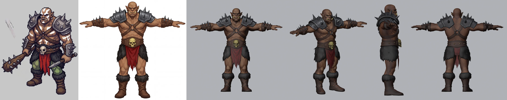
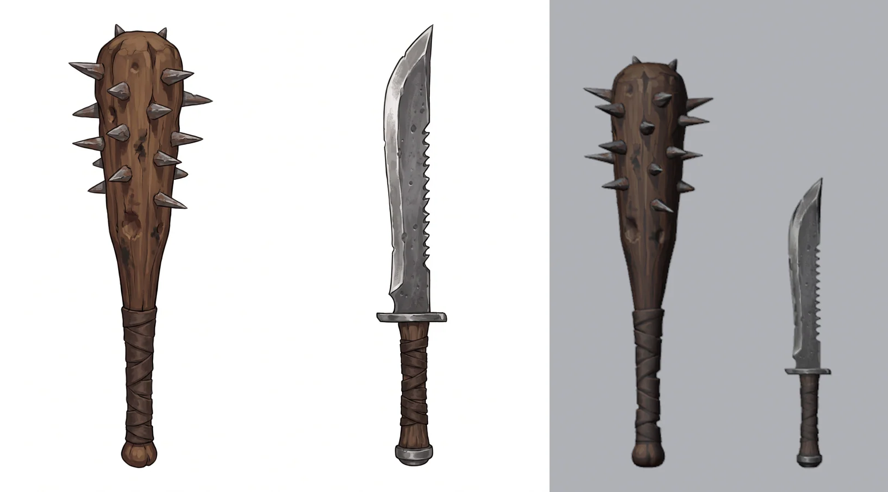
Scaled in Blender
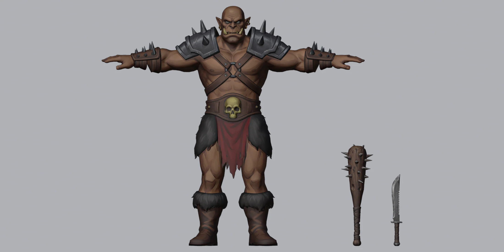
Standard pose
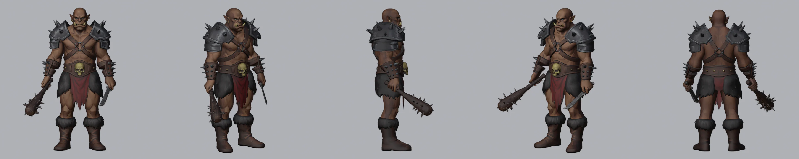
Grips
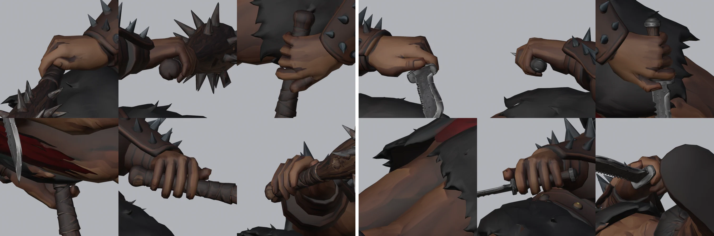
Walk
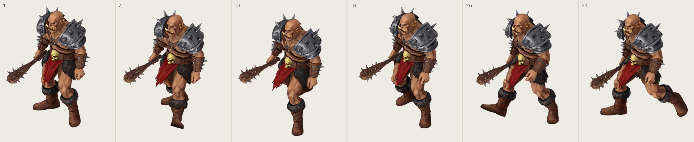
Club swing
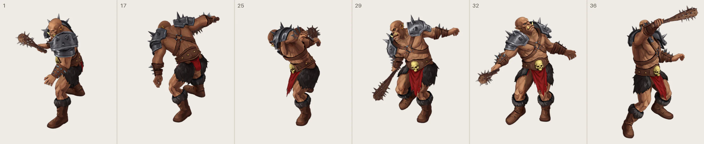
Death
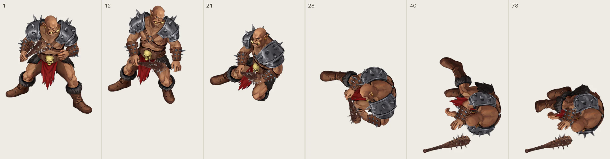
Two clubs
Two of the six brutes fight with a club in each fist. They have a rig of their own, orc_brute_dual_rig.blend, built by the same script from the same body: its left fist holds a copy of the club, its grip solved for the left hand as the right's. They play the same four clips, corrected for both clubs. Pick the Two clubs chips in the pose viewer to step through them.
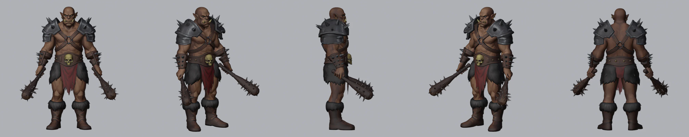
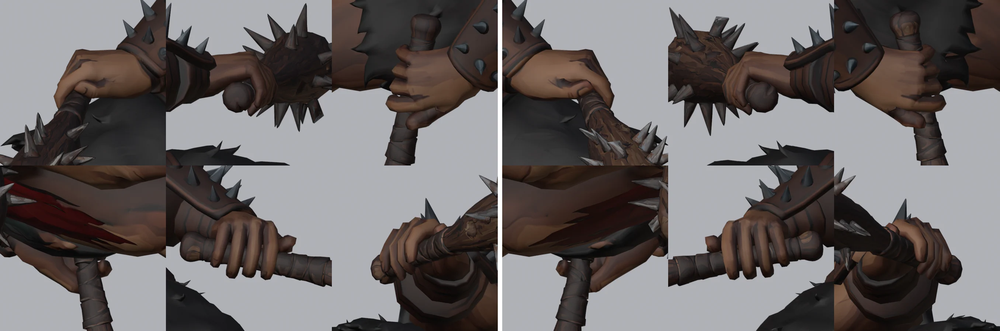
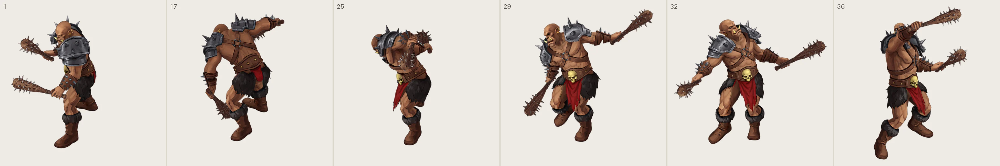
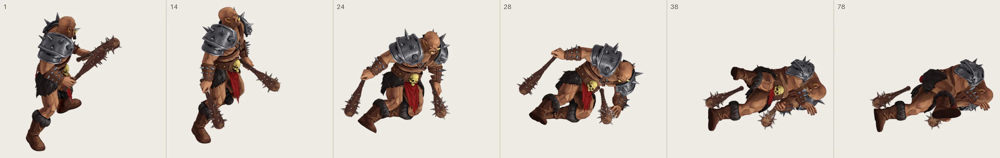
Pauldrons
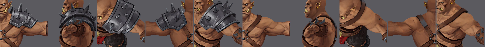
In the 3D Sandbox
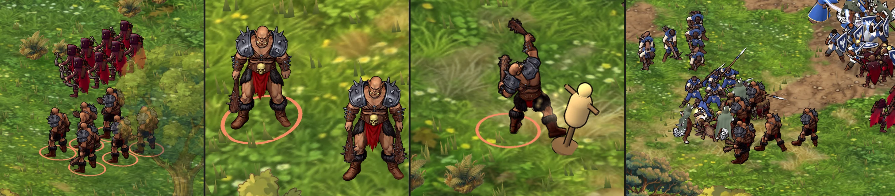
Squad faces
The three faces you circled: a metal jaw, a beard and a scar across the eye. Higgsfield drew each on the brute's bust in the same style as his T-pose. The beard was modelled in Tripo from its own sheet. The jaw plate is modelled in Blender, because Higgsfield drew it as a closed ring twice. The scar is painted into a second copy of his skin. The squad deals out six faces: jaw, beard, scar, beard and scar, jaw and scar, and one bare brute, in a new order each time it spawns.
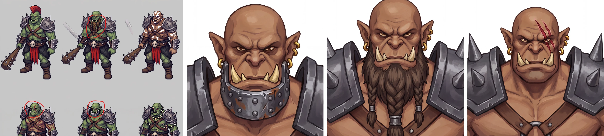
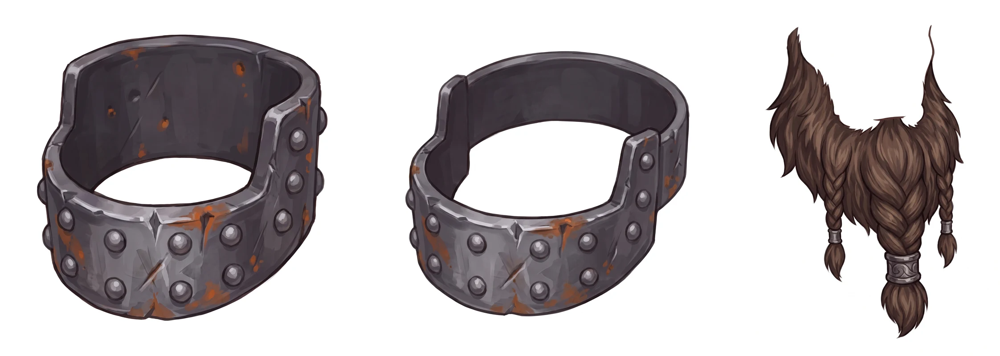
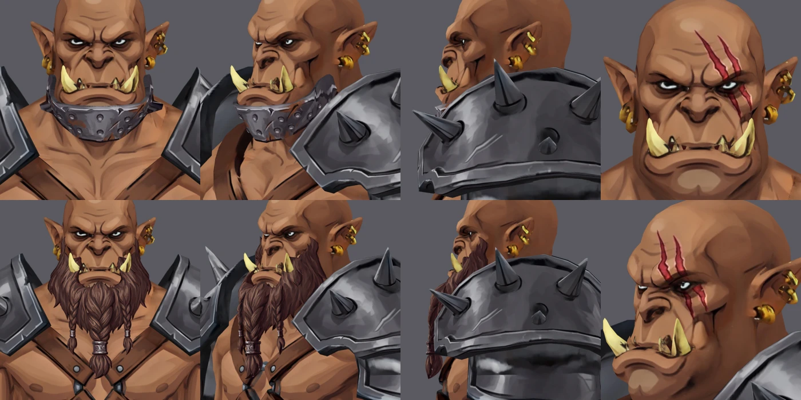
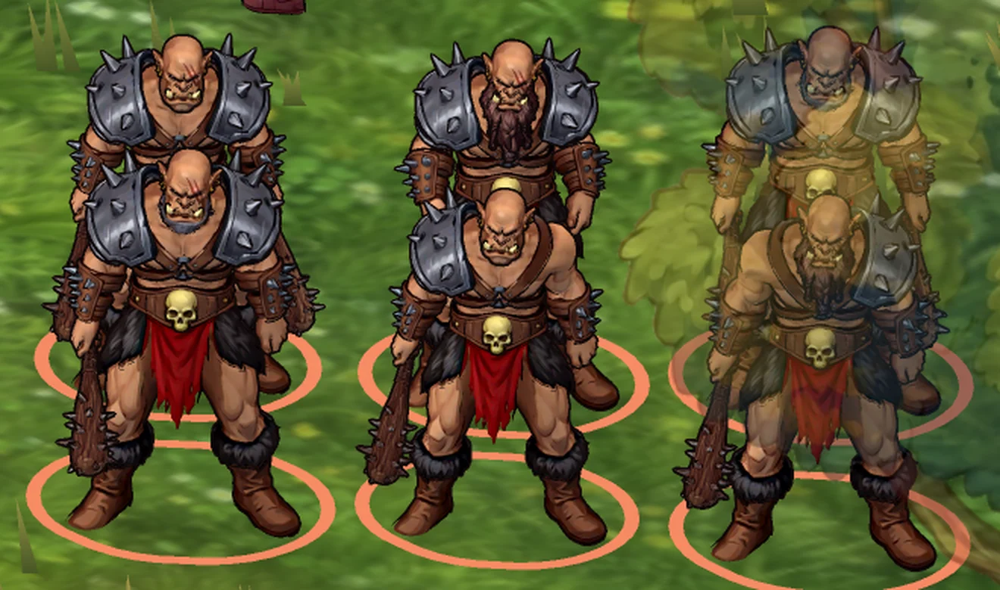
Notes
- Design changes. As you asked, the white body paint is gone and the legs are the same bare brown as his chest. The T-pose has gold rings in both ears rather than only the left, and both bracers are spiked leather, where the prompt asked for a riveted steel vambrace on the left forearm. The loincloth is a single-sided sheet, as Tripo made it, and reads fine from the battle camera.
- Clubs and hands clear. The clips were made for empty hands on a slimmer body. In each frame each arm gets the smallest correction that keeps its club off the body (its own hand left out), off the other club while both are held, and 1 cm above the ground, its hand out of the body (its own forearm left out) and the arm out of the floor. Each correction is spread over the neighbouring frames, so it never pops. A frame still through after that gets the nearest clear pose on a grid, kept in later rounds, and its neighbours ramp into it. With one club the idle took two rounds, the walk one, the swing and the death none; with two, the idle, walk and swing one each and the death six. Checked in all 372 frames of each set: no body triangle cuts through a club or a hand, and the two clubs never cross.
- The empty hand. With the knife gone, the check on the empty left hand showed Mixamo's hanging arm putting it into his left thigh in 113 of the idle's 161 frames, 15 of the walk's and 3 of the swing's, and into his belly in 5 frames of the death. Once the hands were checked, the club fist showed going into his right thigh in 24 idle and 4 walk frames too. Both hands are now kept out of the body in every frame, empty or holding.
- The death and the ground. His hips are lifted wherever his body would go below the ground, by up to 22 cm, widened and averaged so the lift never pops. Each dropped club tips about the line across it until both ends rest on the ground. An earlier version tipped the club the wrong way, and the script now checks that every dropped weapon lands within 20° of level. A correction must not push a fallen arm into the floor either: the two-club death first did, by 9–12 cm. As Mixamo made it, his dying left arm never brings its club near the ground, so the plan had him hold it to the end, and the correction then forced the arm down. A club still held once the arms are corrected now has its release planned again from the corrected clip. Each fall was checked against the other club.
- The Sandbox on slopes. A fallen unit used to lie in the level plane of its feet, so on a slope part of it floated and part sank. On the bench brute's slope, 25 cm across his length, the dropped club sank out of sight at some turns. Now every fallen unit, not only the orc, tilts onto the ground's plane under it as it falls, and back up if it is revived. At every turn both weapons now lie on the ground, 3–7 cm above it at the grip.
- Clips used. Orc - Idle, 161 frames (5.33 s), which eases its last 10 frames into the first, so it loops. Orc - Walk, 37 frames (1.20 s), in place, 1.33 m/s, footfalls at 0.333 s (left) and 0.9 s (right). Attack - Orc brute, 96 frames (3.17 s). Orc - Death, 78 frames (2.57 s); the club lets go at 0.9 s (with two clubs, the left at 0.733 s and the right at 0.833 s), and he lies still from 1.933 s. All at 30 fps, with the hips' motion scaled by his hip height against the clips' (0.959). The Mixamo clips stay local, so the retargeted motion is saved in a separate local copy of the rig, not in the rig file.
- In the game. The Godot export bakes the 58 deforming bones and each club's bone into a GLB: 30,116 triangles with the three faces and one club, 34,676 with two clubs (31,897 with the knife). Each pauldron is a mesh of its own, which a brute's kit can hide. Both models match their rigs to 0.01 mm in every sampled frame. The Orc Brutes squad has six members, two of them with two clubs, and he strikes from 1.6 m. In the Sandbox the swing lands 1.36 m in front of him, straight along his facing. He has no hit clip, so he flinches procedurally when struck, as the goblins and the wolf scout do.
- Frames. Rendered in Blender's Workbench, flat-lit with an outline and cavity, from an orthographic camera 30° above the ground, then packed at 0.75 scale. The idle, walk and swing are framed at 1100 × 900 and the death at 1200 × 1050.
- Limits. At the club, one finger vertex goes 0.8 mm into the grip, and the grip goes up to 3.4 mm into the palm; at the left club of the two-club rig, two finger vertices go 0.5 mm in and the grip 2.3 mm. The stand pose's weapon aims are my reading of the concept. The two-club brute plays the one-club swing, so his left club never strikes.
- Faces in motion. The jaw plate moves with his head. Below the chin, the beard takes its weights from the skin under it, so the braids move with the chest they lie on rather than swinging with the neck. Checked at every frame of every clip in the exported model: on the idle and the walk the plate reaches at most 0.9 mm into the skin and the beard 6 mm, at the lip. In the windup he tucks his chin into his right shoulder, and the plate and the beard cut into the right pauldron and go 1.1 and 1.5 cm into the skin under it. Lying dead, his head rolls onto his left shoulder, and the plate goes 2.1 cm and the beard 6 cm into the shoulder and upper arm, through the left pauldron. Renders of those frames, with the pauldron on and with it off as for the brutes who lost one, show nothing poking through. Neither face meets a club, with one or two.
- Face limits. The scar is a front view painted onto the head, so it fades where the skin turns away and skips the texels under the brow that the front cannot see. At the game's 1,024 px body texture each gouge is about three texels wide. The two gouges are over his left eye, not the right as asked, because that is what the bust shows. The beard has no moustache and leaves the tusks free, as in the bust.
- Files.
projects/meridius/references/characters/blender/orc_brute/orc_brute_rig.blend(rig, weapons and grips),orc_brute_dual_rig.blend(the two-club rig) andorc_brute_base.blend, built by the scripts in itstools/:build_orc_brute.pyandrig_orc_brute.py, withrender_check.pyandrender_rig.pyfor the review renders and measurements. The clips are retargeted byretarget_clips.py, rendered byrender_clips.pyand packed bypack_sheets.py.export_godot.pyandcheck_export.pymake and check the Godot model. The faces are inorc_brute_faces.blend, built byjaw_plate.py,jaw_texture.py,fit_beard.py,scar_uvmap.pyandscar_texture.py. The Tripo exports are inreferences/characters/tripo/orc_brute/, and the prompts, job IDs and costs inreferences/characters/orc_brute/.